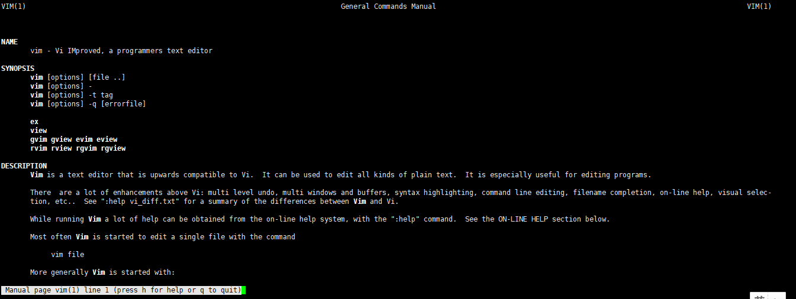

Linux部署常用命令ddd
Thu, Mar 30, 2017目的
该文档主要针对初次在Linux机器上部署应用，对Linux操作系统不熟悉的开发者用户，列举一些常用的命令集合以及部署步骤，供开发者对Linux系统有一个初步的了解和学习
工具
推荐部署工具：
终端工具：XShell 5
文件上传：XFtp
Linux常用命令
1、man:该命令是学习参数命令,任何linux终端命令都可以通过该命令查看参数学习，具体操作明细，命令如下：
lishi@iZbp10yas4kb5a9dudjbw2Z:~> man vim
回车后会详细显示vim命令的具体参数及用法

2、cd:切换文件夹命令，例如从当前/home目录切换到/mnt目录，命令如下：
lishi@iZbp10yas4kb5a9dudjbw2Z:~> cd /
lishi@iZbp10yas4kb5a9dudjbw2Z:/> cd /mnt
lishi@iZbp10yas4kb5a9dudjbw2Z:/mnt> pwd
/mnt
lishi@iZbp10yas4kb5a9dudjbw2Z:/mnt>
3、pwd:显示当前用户所在文件夹位置，命令如下：
lishi@iZbp10yas4kb5a9dudjbw2Z:/mnt> pwd
/mnt
lishi@iZbp10yas4kb5a9dudjbw2Z:/mnt>
4、ps:展示当前进程详情，一般用于查找
例如我想知道当前linux系统运行了多少java相关的进程，命令如下：
ps-ef|grep java
5、netstat: 打印网络连接、路由表、接口统计、伪装连接和多播成员
该命令一般用于通过端口号查找进程，命令如下：
lishi@iZbp10yas4kb5a9dudjbw2Z:/mnt> netstat -anp|grep 8080
(Not all processes could be identified, non-owned process info
will not be shown, you would have to be root to see it all.)
tcp 0 0 0.0.0.0:8080 0.0.0.0:* LISTEN -
lishi@iZbp10yas4kb5a9dudjbw2Z:/mnt>
6、kill:终止进程服务
命令：kill -9 pid
Pid是进程号

7、mv:移动文件
该命令可以作为移动文件命令，也可以作为更名命令使用；

8、mkdir：创建文件夹

9、ls:展示文件夹目录列表信息
命令如下：

10、vim:编辑器
vim是linux 一个编辑器软件，详细参数请通过man命令或网上资料学习使用，这里不一一列举
字母i进入编辑状态
- 按钮esc退出编辑状态
- :wq保存当前文件并退出
- :wq!强制保存并退出
:q!不保存退出
tomcat命令
首先cd到tomcat主目录，然后执行下面命令
bin/startup.sh:启动当前tomcat服务
bin/shutdown.sh:关闭当前tomcat服务
nginx命令
首先cd到nginx主目录，然后执行下面命令
sbin/nginx:启动nginx
sbin/nginx -s reload:重启nginx
sbin/nginx -t:测试nginx配置是否正确，是否可启动
pm2命令
pm2是nodejs的进程管理器，角色类似于Java应用中的tomcat，一般我们的nodejs应用都是通过node命令来启动
例如：

这种方式服务端部署的时候不是很稳定及规范,所以nodejs应用部署使用pm2
通过pm2 help可以查看明细参数

主要命令如下：